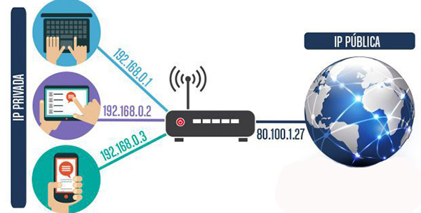

¿Que Es?
IP son las siglas de “Internet Protocol» que, si lo traducimos al español, significa «Protocolo de Internet”. Este protocolo, al igual que otros muchos como HTTP, TCP, UDP, etc., se encarga de establecer las comunicaciones en la mayoría de nuestras redes. Para ello, asigna una dirección única e irrepetible a cada dispositivo que trata de comunicarse en Internet. ¡Hasta una nevera puede tener una dirección IP! Entendemos dispositivo como, por ejemplo, un router, un servidor, un teléfono, un ordenador, una televisión, etc. No existe dispositivo en el mundo que pueda comunicarse con otro sin tener una IP. Las direcciones IP son los nombres numéricos que se asignan a un dispositivo a modo de «matrícula» para que pueda ser llamado por otros dispositivos. Existen dos tipos de IP: las direcciones IP públicas y las direcciones IP privadas. Tanto las direcciones IP públicas como las privadas están construidas en cuatro bloques numéricos. Cada bloque es un número del 0 al 255 y está separado por un punto («.»). Por ejemplo, una dirección IP pública podría ser 63.45.12.34 y una dirección IP privada, 192.168.0.11.

Tipos de IP
Los tipos de Ip son:
Privadas
Es Una dirección de Internet creada solo para usarse en una red interna. Las direcciones privadas las emite un dispositivo de red, como un router, que las extrae de un conjunto de direcciones que le ha asignado un servidor DHCP.

Publicas
Una dirección IP pública es una dirección IPv4 a la que se puede acceder desde internet. Si un recurso de su arrendamiento debe ser directamente accesible desde internet, debe tener una dirección IP pública. Según el tipo de recurso, puede haber otros requisitos.
Clases de IP
Existen 5 Clases de IP:
Clase A [1.0.0.0 a 126.0.0.0] (Grandes Empresas)
Clase B [128.0.0.0 a 191.255.0.0] (Medianas Empresas)
Clase C [192.0.0.0 a 223.255.255.0] (Pequeñas Empresas)
Clase D [224.0.0.0 a 239.0.0.0] (Streaming)
Clase E [240.0.0.0 a 255.0.0.0] (Experimental)